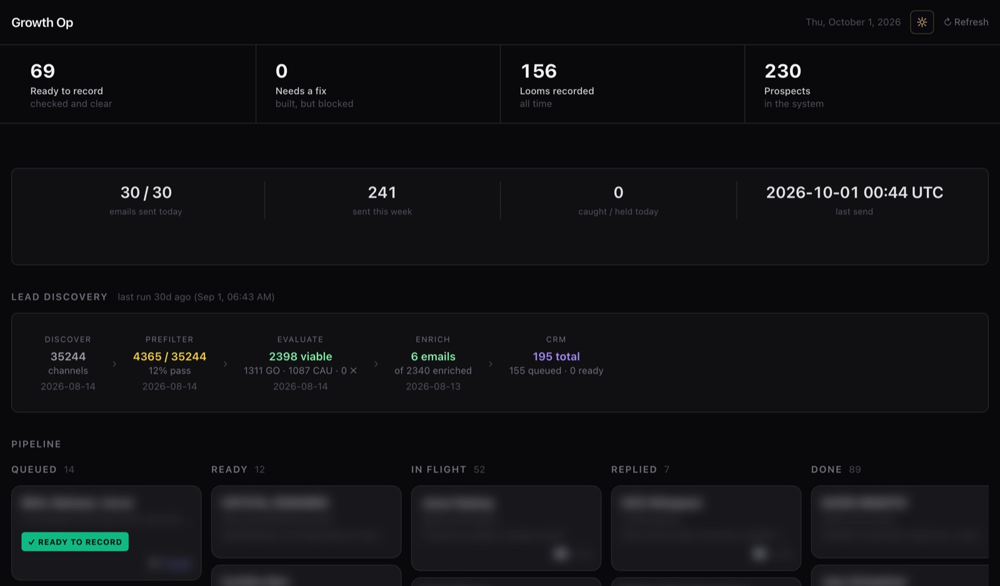

A system that finds the right people, researches them and follows up on its own
It finds the right people to contact, researches each one, writes to each of them personally, and handles the follow-ups by itself, with every reply sent straight to my phone.
In your business: your past customers, and anyone with an open quote, each get a personal message, written the way you would write it, and a follow-up on time, so none go cold.
35,244
YouTube channels my system searched to find the 195 people worth contacting
